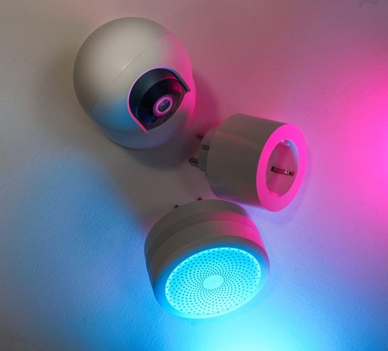
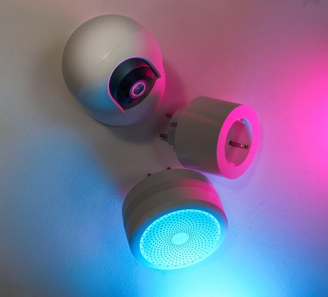

Aikaisempi - todella, todella, todella vähäinen - kokemus piirilevyistä ja komponenteista ei oikein auttanut projektin haasteissa.

Käyttäjä voi valita 16 eri värin ja valoanimaation joukosta painamalla näppäintaulua.
Ajatus lähti Pinterestistä kun näin kuvan baarikaapista tai baarihyllystä, joka oli tehty vanhan putkitelevision rungosta. Kiinnostuin heti ideasta rakentaa itselle myös oma versio.
Menin heti Toriin ja löysin Saloran putkitelevision, jota oli käytetty kirjahyllynä. Eli sieltä oli poistettu kaikki putkitelevision komponentit sisältä.
Huomasin kuitenkin että yksi piirilevy oli jätetty television runkoon kiinni - ja hyvästä syystä. Tämä piirilevy siis pitää kiinni etupaneelin napit ja ilman piirilevyä television rungossa olisi iso reikä.
Tämä sai minut ajattelemaan että olisiko mahdollista hyödyntää television nappeja vaihtamaan baarikaapin ledien värejä tai kuviota. Tämä oli kuin olikin mahdollista!
Aikaisempi - todella, todella, todella vähäinen - kokemus piirilevyistä ja komponenteista ei oikein auttanut projektin haasteissa.
Projekti oli mielekäs, mutta todella haastava. Minulla oli oikea ajatus jo heti projektin lähtöpisteestä, se miten johdot tulisi kolvata piirilevyyn.
Tarkistin piirilevyn nappien sijainnit ja mihin ne johtavat. Piirilevy käyttää tyypillistä 4x4 nappimatrixia, mikä antaa meille 16 nappia 8 johdolla. Leikkasin sopivan mittaiset johdot ja kolvasin ne piirilevyyn.
Tein kytkennät johdoille arduinoon ja oli aika testata. Ei toimi...
Pitkän selvittelyn jälkeen, lukuisien nappimatrix dokumenttien lukemisen ja johtojen järjestyksen vaihtelemisen jälkeen. Ei toimi vieläkään.
Kirjoitin nappeja ohjaavan koodinkin ylösalaisin ja ympäri vaikka kuinka monesti, mutta en saanut toivottua tulosta. Satunnaisesti jotkut napit saattoivat toimia, ja joskus sattui haamupainalluksia.
Ihmettelin mistä tämä voi johtua ja päädyin lopputulokseen että johtoni olivat liian pitkät ja kasassa toistensa kanssa aiheuttaisi haamupainalluksia sähkön pomppiessa johdosta toiseen.
Joten leikkasin johdot lyhyiksi ja kokeilin uudestaan. Ei vieläkään.
Annoin projektin hautua ja tullessa takaisin mietin voisiko piirilevyn alkuperäiset komponentit vaikuttaa nappien toimintaan. Otin siis kolvin käteen ja poistin komponentin jonka ajattelin eniten vaikuttavan nappimatrixiin. Ja kuinkas ollakkaan, homma alkoi pelittämään.
Aikaisempi - todella, todella, todella vähäinen - kokemus piirilevyistä ja komponenteista ei oikein auttanut projektin haasteissa.
Laitteessa on myös lisää säätimiä kuten
Näistä saisi varmasti tehtyä kirkkauden säätimen valoille ja liikkuvissa kuvioissa säätää valojen nopeutta. Olisi myös hyvä lisätä pieni näyttö kertomaan käyttäjälle mikä valoasetus on kyseessä.
 
